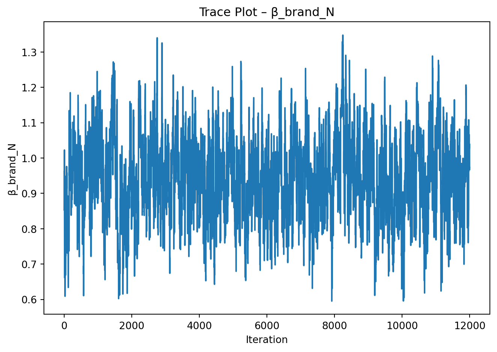
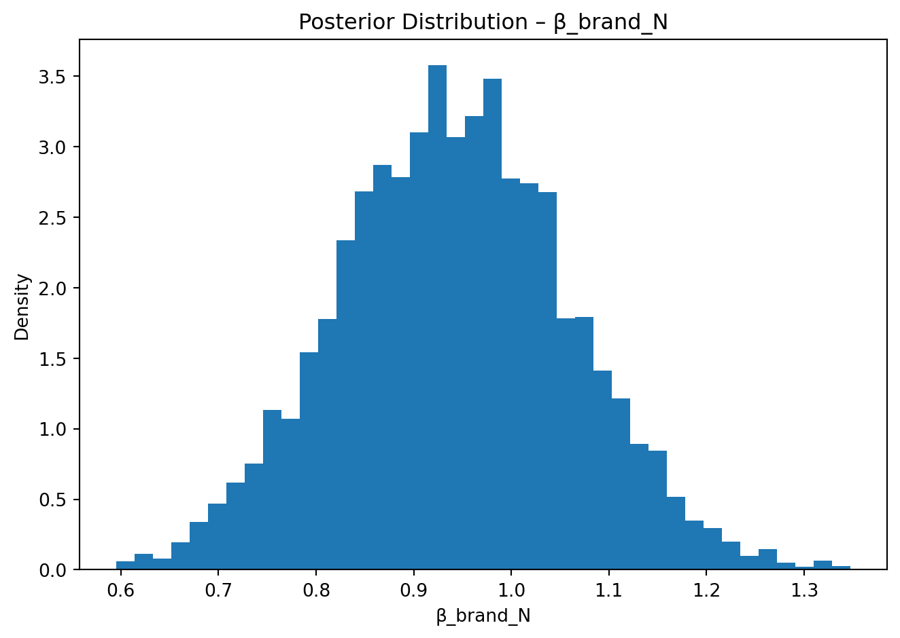

import pandas as pd
conjoint_data = pd.read_csv("conjoint_data.csv")
conjoint_data.head()| resp | task | choice | brand | ad | price | |
|---|---|---|---|---|---|---|
| 0 | 1 | 1 | 1 | N | Yes | 28 |
| 1 | 1 | 1 | 0 | H | Yes | 16 |
| 2 | 1 | 1 | 0 | P | Yes | 16 |
| 3 | 1 | 2 | 0 | N | Yes | 32 |
| 4 | 1 | 2 | 1 | P | Yes | 16 |
Shuyang Zhang
June 5, 2025
This assignment expores two methods for estimating the MNL model: (1) via Maximum Likelihood, and (2) via a Bayesian approach using a Metropolis-Hastings MCMC algorithm.
Suppose we have \(i=1,\ldots,n\) consumers who each select exactly one product \(j\) from a set of \(J\) products. The outcome variable is the identity of the product chosen \(y_i \in \{1, \ldots, J\}\) or equivalently a vector of \(J-1\) zeros and \(1\) one, where the \(1\) indicates the selected product. For example, if the third product was chosen out of 3 products, then either \(y=3\) or \(y=(0,0,1)\) depending on how we want to represent it. Suppose also that we have a vector of data on each product \(x_j\) (eg, brand, price, etc.).
We model the consumer’s decision as the selection of the product that provides the most utility, and we’ll specify the utility function as a linear function of the product characteristics:
\[ U_{ij} = x_j'\beta + \epsilon_{ij} \]
where \(\epsilon_{ij}\) is an i.i.d. extreme value error term.
The choice of the i.i.d. extreme value error term leads to a closed-form expression for the probability that consumer \(i\) chooses product \(j\):
\[ \mathbb{P}_i(j) = \frac{e^{x_j'\beta}}{\sum_{k=1}^Je^{x_k'\beta}} \]
For example, if there are 3 products, the probability that consumer \(i\) chooses product 3 is:
\[ \mathbb{P}_i(3) = \frac{e^{x_3'\beta}}{e^{x_1'\beta} + e^{x_2'\beta} + e^{x_3'\beta}} \]
A clever way to write the individual likelihood function for consumer \(i\) is the product of the \(J\) probabilities, each raised to the power of an indicator variable (\(\delta_{ij}\)) that indicates the chosen product:
\[ L_i(\beta) = \prod_{j=1}^J \mathbb{P}_i(j)^{\delta_{ij}} = \mathbb{P}_i(1)^{\delta_{i1}} \times \ldots \times \mathbb{P}_i(J)^{\delta_{iJ}}\]
Notice that if the consumer selected product \(j=3\), then \(\delta_{i3}=1\) while \(\delta_{i1}=\delta_{i2}=0\) and the likelihood is:
\[ L_i(\beta) = \mathbb{P}_i(1)^0 \times \mathbb{P}_i(2)^0 \times \mathbb{P}_i(3)^1 = \mathbb{P}_i(3) = \frac{e^{x_3'\beta}}{\sum_{k=1}^3e^{x_k'\beta}} \]
The joint likelihood (across all consumers) is the product of the \(n\) individual likelihoods:
\[ L_n(\beta) = \prod_{i=1}^n L_i(\beta) = \prod_{i=1}^n \prod_{j=1}^J \mathbb{P}_i(j)^{\delta_{ij}} \]
And the joint log-likelihood function is:
\[ \ell_n(\beta) = \sum_{i=1}^n \sum_{j=1}^J \delta_{ij} \log(\mathbb{P}_i(j)) \]
We will simulate data from a conjoint experiment about video content streaming services. We elect to simulate 100 respondents, each completing 10 choice tasks, where they choose from three alternatives per task. For simplicity, there is not a “no choice” option; each simulated respondent must select one of the 3 alternatives.
Each alternative is a hypothetical streaming offer consistent of three attributes: (1) brand is either Netflix, Amazon Prime, or Hulu; (2) ads can either be part of the experience, or it can be ad-free, and (3) price per month ranges from $4 to $32 in increments of $4.
The part-worths (ie, preference weights or beta parameters) for the attribute levels will be 1.0 for Netflix, 0.5 for Amazon Prime (with 0 for Hulu as the reference brand); -0.8 for included adverstisements (0 for ad-free); and -0.1*price so that utility to consumer \(i\) for hypothethical streaming service \(j\) is
\[ u_{ij} = (1 \times Netflix_j) + (0.5 \times Prime_j) + (-0.8*Ads_j) - 0.1\times Price_j + \varepsilon_{ij} \]
where the variables are binary indicators and \(\varepsilon\) is Type 1 Extreme Value (ie, Gumble) distributed.
The following code provides the simulation of the conjoint data.
| resp | task | choice | brand | ad | price | |
|---|---|---|---|---|---|---|
| 0 | 1 | 1 | 1 | N | Yes | 28 |
| 1 | 1 | 1 | 0 | H | Yes | 16 |
| 2 | 1 | 1 | 0 | P | Yes | 16 |
| 3 | 1 | 2 | 0 | N | Yes | 32 |
| 4 | 1 | 2 | 1 | P | Yes | 16 |
::::
The “hard part” of the MNL likelihood function is organizing the data, as we need to keep track of 3 dimensions (consumer \(i\), covariate \(k\), and product \(j\)) instead of the typical 2 dimensions for cross-sectional regression models (consumer \(i\) and covariate \(k\)). The fact that each task for each respondent has the same number of alternatives (3) helps. In addition, we need to convert the categorical variables for brand and ads into binary variables.
# One-hot encode brand variable (Hulu is baseline, so drop_first=True)
conjoint_data = pd.get_dummies(conjoint_data, columns=["brand"], drop_first=True)
conjoint_data["ad"] = conjoint_data["ad"].map({"Yes": 1, "No": 0})
conjoint_data["alt_id"] = conjoint_data.groupby(["resp", "task"]).cumcount()
# Reorder columns for clarity
cols = ["resp", "task", "alt_id", "choice", "brand_N", "brand_P", "ad", "price"]
conjoint_data = conjoint_data[cols]
# Preview result
conjoint_data.head()| resp | task | alt_id | choice | brand_N | brand_P | ad | price | |
|---|---|---|---|---|---|---|---|---|
| 0 | 1 | 1 | 0 | 1 | True | False | 1 | 28 |
| 1 | 1 | 1 | 1 | 0 | False | False | 1 | 16 |
| 2 | 1 | 1 | 2 | 0 | False | True | 1 | 16 |
| 3 | 1 | 2 | 0 | 0 | True | False | 1 | 32 |
| 4 | 1 | 2 | 1 | 1 | False | True | 1 | 16 |
import numpy as np
from scipy.optimize import minimize
# Step 1: Define log-likelihood function
def neg_log_likelihood(beta, df):
v = (
beta[0] * df["brand_N"] +
beta[1] * df["brand_P"] +
beta[2] * df["ad"] +
beta[3] * df["price"]
)
# Compute exponentiated utility for softmax denominator
df["exp_v"] = np.exp(v)
# Compute denominator per (resp, task)
df["sum_exp_v"] = df.groupby(["resp", "task"])["exp_v"].transform("sum")
# Compute predicted probabilities
df["prob"] = df["exp_v"] / df["sum_exp_v"]
# Compute log-likelihood only on chosen alternatives (choice == 1)
df["log_prob"] = np.log(df["prob"])
ll = df.loc[df["choice"] == 1, "log_prob"].sum()
return -ll # return negative log-likelihood for minimization# Step 2: Estimate parameters
initial_beta = np.zeros(4) # [beta_netflix, beta_prime, beta_ads, beta_price]
result = minimize(neg_log_likelihood, initial_beta, args=(conjoint_data,), method='BFGS')
# Step 3: Extract estimates and standard errors
beta_hat = result.x
hessian_inv = result.hess_inv # estimated variance-covariance matrix
se = np.sqrt(np.diag(hessian_inv))
# 95% confidence intervals
z = 1.96
ci_lower = beta_hat - z * se
ci_upper = beta_hat + z * se
# Display results
for i, name in enumerate(["brand_N (Netflix)", "brand_P (Prime)", "ad", "price"]):
print(f"{name:20} β = {beta_hat[i]:.4f}, SE = {se[i]:.4f}, 95% CI = ({ci_lower[i]:.4f}, {ci_upper[i]:.4f})")brand_N (Netflix) β = 0.9412, SE = 0.1188, 95% CI = (0.7083, 1.1741)
brand_P (Prime) β = 0.5016, SE = 0.1215, 95% CI = (0.2636, 0.7397)
ad β = -0.7320, SE = 0.0887, 95% CI = (-0.9058, -0.5582)
price β = -0.0995, SE = 0.0063, 95% CI = (-0.1119, -0.0870)import numpy as np
import pandas as pd
from scipy.optimize import minimize
# 1. Read & preprocess data
df = pd.read_csv("conjoint_data.csv")
# brand: Use Hulu as the baseline, generate brand_N / brand_P
df = pd.get_dummies(df, columns=["brand"], drop_first=True)
# ad: Map Yes → 1, No → 0
df["ad"] = df["ad"].map({"Yes": 1, "No": 0})
# Standardize price to avoid overflow in softmax
df["price_std"] = (df["price"] - df["price"].mean()) / df["price"].std()
# Assign alternative IDs (0, 1, 2) within each respondent-task group
df["alt_id"] = df.groupby(["resp", "task"]).cumcount()
# 2. Negative log-likelihood (log-sum-exp version)
def neg_ll(beta):
v = (
beta[0] * df["brand_N"].values +
beta[1] * df["brand_P"].values +
beta[2] * df["ad"].values +
beta[3] * df["price_std"].values
)
df["v"] = v
# log-sum-exp trick
v_max = df.groupby(["resp", "task"])["v"].transform("max").values
df["exp_v"] = np.exp(v - v_max)
denom = df.groupby(["resp", "task"])["exp_v"].transform("sum").values
prob = df["exp_v"].values / denom
ll = np.log(prob[df["choice"].values == 1]).sum()
return -ll
# 3. MLE: Estimate β, Hessian → SE & 95% CI
init = np.zeros(4)
mle_res = minimize(neg_ll, init, method="BFGS")
beta_mle = mle_res.x
vcov = mle_res.hess_inv # Inverse Hessian
se_mle = np.sqrt(np.diag(vcov))
z = 1.96
ci_mle = np.vstack([beta_mle - z*se_mle, beta_mle + z*se_mle]).T
mle_table = pd.DataFrame({
"Parameter": ["β_brand_N (Netflix)",
"β_brand_P (Prime)",
"β_ad",
"β_price_std"],
"β_hat": beta_mle.round(3),
"SE": se_mle.round(3),
"CI_low": ci_mle[:, 0].round(3),
"CI_high": ci_mle[:, 1].round(3)
})
mle_table.style.set_caption("Maximum-Likelihood Estimates")| Parameter | β_hat | SE | CI_low | CI_high | |
|---|---|---|---|---|---|
| 0 | β_brand_N (Netflix) | 0.941000 | 0.112000 | 0.722000 | 1.161000 |
| 1 | β_brand_P (Prime) | 0.502000 | 0.113000 | 0.281000 | 0.722000 |
| 2 | β_ad | -0.732000 | 0.089000 | -0.906000 | -0.558000 |
| 3 | β_price_std | -0.794000 | 0.050000 | -0.893000 | -0.695000 |
# 4. Bayesian M-H sampler
def log_prior(beta):
# N(0,5) for dummies, N(0,1) for price_std
sigma2 = np.array([5.0, 5.0, 5.0, 1.0])
return -0.5 * (np.log(2*np.pi*sigma2).sum() + np.sum(beta**2 / sigma2))
def log_post(beta):
return -neg_ll(beta) + log_prior(beta)
n_iter, burn_in = 15_000, 3_000
step_sd = np.array([0.08, 0.08, 0.08, 0.04])
rng = np.random.default_rng()
samples = np.zeros((n_iter - burn_in, 4))
beta_cur, logp_cur = beta_mle.copy(), log_post(beta_mle)
accept = 0
for t in range(n_iter):
beta_prop = beta_cur + rng.normal(scale=step_sd)
logp_prop = log_post(beta_prop)
if np.log(rng.random()) < (logp_prop - logp_cur):
beta_cur, logp_cur = beta_prop, logp_prop
accept += 1
if t >= burn_in:
samples[t - burn_in] = beta_cur
acc_rate = accept / n_iter
means = samples.mean(axis=0)
ci_bayes = np.percentile(samples, [2.5, 97.5], axis=0).T
print(f"Acceptance rate = {acc_rate:.2%}\n")
bayes_table = pd.DataFrame({
"Parameter": ["β_brand_N (Netflix)",
"β_brand_P (Prime)",
"β_ad",
"β_price_std"],
"Posterior Mean": means.round(3),
"CI_low": ci_bayes[:, 0].round(3),
"CI_high": ci_bayes[:, 1].round(3)
})
bayes_table.style.set_caption("Bayesian MCMC Posterior Summary")Acceptance rate = 43.84%
| Parameter | Posterior Mean | CI_low | CI_high | |
|---|---|---|---|---|
| 0 | β_brand_N (Netflix) | 0.942000 | 0.712000 | 1.175000 |
| 1 | β_brand_P (Prime) | 0.500000 | 0.284000 | 0.719000 |
| 2 | β_ad | -0.740000 | -0.914000 | -0.566000 |
| 3 | β_price_std | -0.796000 | -0.900000 | -0.699000 |
# Trace plot
import matplotlib.pyplot as plt
plt.plot(samples[:, 0])
plt.xlabel("Iteration")
plt.ylabel("β_brand_N")
plt.title("Trace Plot – β_brand_N")
plt.tight_layout()
plt.show()
# Posterior histogram
plt.hist(samples[:, 0], bins=40, density=True)
plt.xlabel("β_brand_N")
plt.ylabel("Density")
plt.title("Posterior Distribution – β_brand_N")
plt.tight_layout()
plt.show()

import numpy as np
import pandas as pd
param_names = ["β_brand_N", "β_brand_P", "β_ad", "β_price_std"]
post_means = samples.mean(axis=0)
post_sds = samples.std(axis=0, ddof=1)
post_ci = np.percentile(samples, [2.5, 97.5], axis=0).T
summary = pd.DataFrame({
"Parameter" : param_names,
"Post_Mean" : np.round(post_means, 3),
"Post_SD" : np.round(post_sds, 3),
"Post_95%_Low" : np.round(post_ci[:,0], 3),
"Post_95%_High" : np.round(post_ci[:,1], 3),
"MLE" : np.round(beta_mle, 3),
"MLE_SE" : np.round(se_mle, 3)
})
summary| Parameter | Post_Mean | Post_SD | Post_95%_Low | Post_95%_High | MLE | MLE_SE | |
|---|---|---|---|---|---|---|---|
| 0 | β_brand_N | 0.942 | 0.119 | 0.712 | 1.175 | 0.941 | 0.112 |
| 1 | β_brand_P | 0.500 | 0.111 | 0.284 | 0.719 | 0.502 | 0.113 |
| 2 | β_ad | -0.740 | 0.088 | -0.914 | -0.566 | -0.732 | 0.089 |
| 3 | β_price_std | -0.796 | 0.051 | -0.900 | -0.699 | -0.794 | 0.050 |
Brand effects
The posterior mean for \(β_{\text{Netflix}} ≈ 0.94\) is almost twice that of \(β_{\text{Prime}} ≈ 0.50\) (both relative to the Hulu baseline).
Advertising disutility
\(β_{\text{ads}} ≈ -0.73\) indicates a sizeable penalty when a plan contains ads.
Price sensitivity
\(β_{\text{price\_std}} ≈ -0.79\) is the effect of a one–standard-deviation increase in price (≈ $6.8 in this data).
Overall, even without knowing the data-generation process, we would report that respondents most prefer Netflix, tolerate Prime, strongly dislike ads, and are price sensitive in the expected direction.
Instead of a single \(\beta\) for the whole sample, assume each respondent \(i\) has their own \(\beta_i\) drawn from a population distribution.
Simulate such data
Estimate the model
Why bother?
In short, the single change is: replace the single-\(\beta\) likelihood with a simulated (or hierarchical) likelihood that accounts for respondent-level heterogeneity; everything else—data structure, dummy coding, log-sum-exp numerics—remains essentially the same.